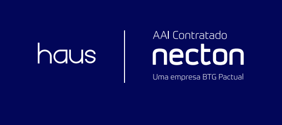
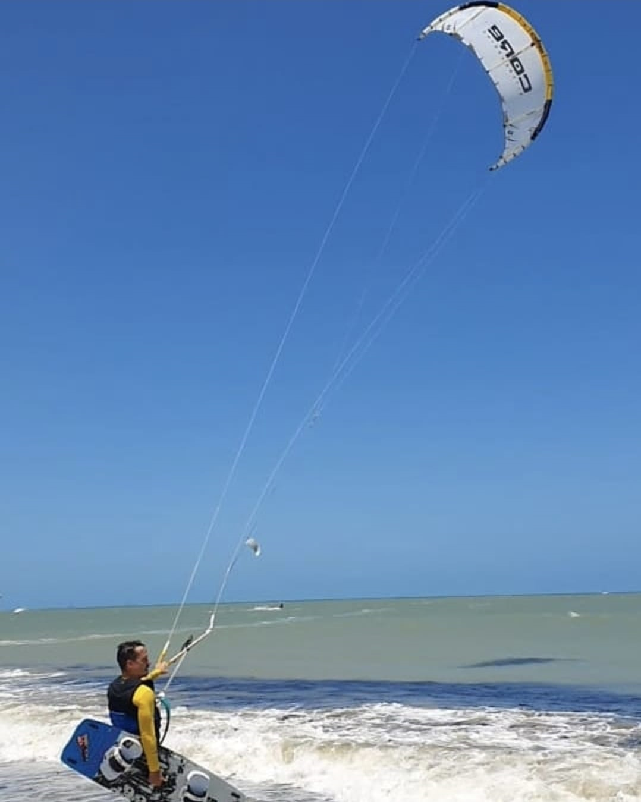

Nome: Tiago Capparelli
Data: [Data da Apresentação]
Família: Sou um pai orgulhoso do Enrico e companheiro da Thalitta. A chegada do Enrico me agraciou com a oportunidade de experimentar o sentimento mais puro que já tive. Ele me cura e me reaproxima da minha essência e da minha criança interior. O papel de pai me faz sentir extremamente realizado.
Curiosidades: Sou um entusiasta dos esportes, com uma paixão especial pelo futebol, kitesurf e musculação. Recentemente, comecei a me aventurar no tênis, e estou adorando o desafio de aprender algo novo. Além dos esportes, adoro fazer amizades e estar rodeado de pessoas bem-humoradas e inteligentes. Sou espiritualista e um grande entusiasta do autoconhecimento. Estou sempre buscando me conectar com a fonte da Vida e desvendar os mistérios que nos cercam. Esse é, sem dúvida, meu assunto favorito, e preciso me policiar para não monopolizar a conversa quando o tema surge! Viajar é outra grande paixão. Adoro explorar novos lugares, conhecer novas pessoas, experimentar boa comida e viver novas experiências. Essas aventuras me mantêm em movimento e me inspiram constantemente. Por fim, amo o que faço e encontrei meu propósito de vida na Haus, onde tenho a oportunidade de ajudar as pessoas a alcançarem seus sonhos. Isso me traz uma enorme satisfação e realização pessoal.
Fundador das Empresas: Haus, Notoriall e Capparelli. Essas empresas nasceram no meu coração há sete anos, quando recebi a visão de criar uma assessoria integrada e completa, capaz de cuidar e acelerar os sonhos das pessoas, sejam elas clientes ou profissionais.
Objetivo: Oferecer um serviço que fosse além do convencional, proporcionando uma experiência única e personalizada para cada cliente. Além disso, sonho em ver vidas e famílias transformadas pela abundância e pela energia de estar em nosso ambiente de trabalho. A abundância e prosperidade permeiam todo o nosso ecossistema.
Primeiro Setênio: Marcado por muitos desafios e superações. Agora, ao entrar em uma nova era, estamos destinados a uma força de expansão e crescimento. Estejamos atentos